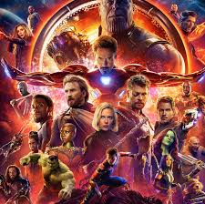
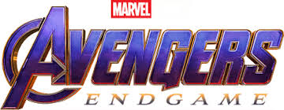
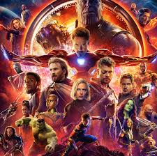
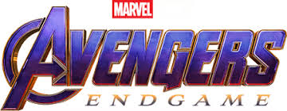
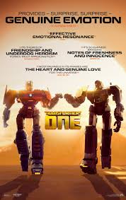

Avengers: Endgame is a 2019 American superhero film based on the Marvel Comics superhero team the Avengers. Produced by Marvel Studios and distributed by Walt Disney Studios Motion Pictures, it is the direct sequel to Avengers: Infinity War (2018) and the 22nd film in the Marvel Cinematic Universe (MCU). Directed by Anthony and Joe Russo and written by Christopher Markus and Stephen McFeely, the film features an ensemble cast which includes Robert Downey Jr., Chris Evans, Mark Ruffalo, Chris Hemsworth, Scarlett Johansson, Jeremy Renner, Don Cheadle, Paul Rudd, Brie Larson, Karen Gillan, Danai Gurira, Benedict Wong, Jon Favreau, Bradley Cooper, Gwyneth Paltrow, and Josh Brolin. In the film, the surviving members of the Avengers and their allies attempt to reverse Thanos's actions in Infinity War which erased half of all life in the universe. The film was announced in October 2014 as Avengers: Infinity War – Part 2, but Marvel Studios later removed this title. The Russo brothers joined as directors in April 2015, with Markus and McFeely signing on to write the script a month later. It is a conclusion to the story of the MCU up to that point, ending the story arcs of several main characters. The film's plot revisits several moments from earlier films, bringing back actors and settings from throughout the franchise. Filming began in August 2017 at Pinewood Atlanta Studios in Fayette County, Georgia, shooting back-to-back with Infinity War, and ended in January 2018. Additional filming took place in the Metro and downtown Atlanta areas, the state of New York, Scotland, and England. The official title was announced in December 2018. With an estimated budget of $356–400 million, the film is one of the most expensive films ever produced. Avengers: Endgame premiered at the Los Angeles Convention Center on April 22, 2019, and was released in the United States on April 26 as part of Phase Three of the MCU. The film received praise for its direction, acting, musical score, action scenes, visual effects, and emotional weight, with critics lauding its culmination of the 22-film story. It grossed $2.799 billion worldwide, surpassing Infinity War's entire theatrical run in eleven days and setting a number of box-office records. It was the highest-grossing film of all time from July 2019 to March 2021. The film was nominated for Best Visual Effects at the 92nd Academy Awards, among numerous other accolades. Two further films, Avengers: Doomsday and Avengers: Secret Wars, are scheduled for release in 2026 and 2027, respectively.
 



Alan Silvestri, who composed the score for The Avengers, was announced in June 2016 to be returning to score Infinity War and Endgame. [110] The Russos began working with Silvestri on the Endgame score in early November 2018,[111] and it was completed in late March 2019. [112] A soundtrack album with Silvestri's score was released digitally by Hollywood Records on April 26, 2019, with a physical release on May 24. [113] A video for the track "Portals", composed for the climactic "Avengers assemble" scene in which reinforcements arrive for the Avengers,was released on June 13.[114] Silvestri described the score as having the franchise's most versatile tone, ranging from "thunderous percussion and powerful brass" for the action scenes to minimalist, jazz-inspired music for Ant-Man and the Quantum Realm. He reprised his themes from the previous Avengers films and Captain America: The First Avenger, including material he wrote for Thanos and the Infinity Stones in Infinity War. Silvestri found writing the music to end Captain America's story poignant, since he had "been on this journey with him since the beginning". [115] The film also used the Ant-Man (2015) theme by Christophe Beck, the Doctor Strange (2016) theme by Michael Giacchino, and the Captain Marvel theme by Pinar Toprak. [116] The songs "Come and Get Your Love" by Redbone and "It's Been a Long, Long Time" by Jule Styne and Sammy Cahn were also used after previously being heard in Guardians of the Galaxy and Captain America: The Winter Soldier (2014), respectively.[117][118]
The marketing campaign for Endgame cost over $200 million, the most for any Marvel Studios film. Promotional partners included Stand Up to Cancer, Mastercard, Ulta Beauty, the Audi e-tron GT concept car (which appears in the film), McDonald's, GEICO, Coca-Cola, Google, General Mills, Hertz, Ziploc, Oppo, and Synchrony Financial.[119] A year before the film's release, Germain Lussier of io9 spoke on the approach Marvel might have to take in marketing the film, given the end of Infinity War where many established characters die. He questioned if those characters would appear on posters and in toy campaigns, and if the actors playing them would participate in press events leading up to the film's release. Lussier felt that Disney and Marvel could focus on the original Avengers team members (most of the living characters), but noted that it would be more beneficial to show the return of the dead characters; this would create a "mystery and curiosity about how they come back" and a "whole new level of interest" for the film "while having all the stars front and center".[120] Feige said in June 2018 that the dead characters would not be featured in the film's marketing.[121] He presented a behind-the-scenes video from the film at CineEurope,[122][123] and said that its marketing campaign would begin at the end of 2018.[124] In early December 2018, before the first trailer's release, Graeme McMillan of The Hollywood Reporter spoke about the "fevered anticipation" surrounding it and felt it "remarkable", mostly "fan-created, without [the] noticeable direction from Marvel or the filmmakers involved"; knowledge about the film, without promotion was, "a kind of brand awareness" that was unusual. McMillan urged Marvel not to release any trailers for the film, since "the advanced level of enthusiasm [...] [was] likely to build" before its release; a trailer would take away the "Schrödinger's cat-esque position", as it was "almost guaranteed" to disappoint fans.[125] The first trailer for the film was released on December 7, 2018.[126] Dustin Sandoval, vice president of digital marketing for Marvel Studios, said that the marketing team "made the choice" to omit the "title or hashtag" for the film in its trailer posts, allowing fans to see the trailer without spoiling it by watching "at the end".[127] Richard Newby, also of The Hollywood Reporter, felt that although little new material was revealed in the trailer, it offered a "somber glimpse of a universe made unrecognizable" and let the viewer consider "the ending of Avengers: Infinity War and our questions of loss". Newby noted that the trailer highlighted the characters' "humble beginnings" with its visual language, and left viewers with "just as many questions as we had before".[126] Austen Goslin of Polygon said that the title references a line by Doctor Strange to Tony Stark in Infinity War and a line by Stark in Age of Ultron. Goslin said, "The scene surrounding this line in Age of Ultron is one of the most important ones in the movie. Things look dark, and the group of heroes face an enemy they don't think they can defeat." The Endgame trailer "mirrors this perfectly", and "shows us that the Avengers' two most prominent characters are who they've always been: Iron Man, a pessimist who keeps fighting no matter how hopeless things look, and Captain America, an optimist who believes that nothing is hopeless when the world's heroes fight together."[128] The trailer was viewed 289 million times in its first 24 hours and was the most-viewed trailer in that time period, surpassing the record of Avengers: Infinity War (230 million views). It set a record for Twitter conversation for a film trailer in the first 24 hours, generating 549,000 mentions.[129] By January 3, 2019, BoxOffice's "Trailer Impact" metric service indicated that 77 to 78 percent of people surveyed who viewed the Endgame trailer in the past three weeks had expressed interest in seeing the film. In the three weeks it was measured by the service, the trailer was number one for all and had the top two percent of respondents express interest in seeing the film since the service's introduction in March 2018.[130] The second trailer for the film and its theatrical release poster were released on March 14, 2019. All 13 actors on the poster received top billing except for Danai Gurira, whose name appeared in the poster's bottom billing block with Benedict Wong, Jon Favreau, and Gwyneth Paltrow (none of whom appeared on the poster). Despite this, her exclusion from the top billing prompted criticism from some fans. [38][131] Petrana Radulovic of Polygon said that how an actor is credited on a poster "is a complex process" based on "dealing with agents, fees, and movie star demands."[38] Marvel Studios released an updated poster later that day, with Gurira in the top billing. [38][131] The second trailer was viewed 268 million times in the first 24 hours, becoming the second-most-viewed trailer in that time period (behind the first trailer).[132]
jumanji is a 1995 American fantasy adventure film directed by Joe Johnston from a screenplay by Jonathan Hensleigh, Greg Taylor, and Jim Strain, based on the 1981 children's picture book by Chris Van Allsburg. The film is the first installment in the Jumanji film series and stars Robin Williams, Kirsten Dunst, David Alan Grier, Bonnie Hunt, Jonathan Hyde, and Bebe Neuwirth. The story centers on a supernatural board game that releases jungle-based hazards on its players with every turn they take. Jumanji premiered on December 10, 1995 in Culver City, California, and went into general release on December 15. The film received mixed reviews from critics, but was a box office success, grossing $263 million worldwide on a budget of approximately $65 million. It was the tenth highest-grossing film of 1995. The film spawned an animated television series that aired from 1996 to 1999, and was followed by a spin-off film, Zathura: A Space Adventure (2005), and two sequels, Jumanji: Welcome to the Jungle (2017) and Jumanji: The Next Level (2019).
In 1969, Alan Parrish lives in Brantford, New Hampshire, with his parents, Sam and Carol. One day, he escapes a group of bullies and retreats to Sam's shoe factory. His friend Carl Bentley reveals a new shoe prototype he made himself. Alan inadvertently damages the shoe after misplacing it on a conveyor belt, but Carl takes responsibility and is dismissed. After the bullies attack Alan and steal his bicycle, Alan follows the sound of tribal drumbeats to a construction site. He finds a board game Jumanji, which was buried 100 years earlier, and brings it home. After a disagreement with Sam about attending a local boarding school, Alan plans to run away, just as his friend, Sarah Whittle, returns his bicycle. Alan shows her Jumanji and invites her to play. With each dice roll, the game pieces move by themselves and a cryptic message describing the roll's outcome appears in the crystal ball at the center of the board. After Alan inadvertently rolls, a message tells him to wait in a jungle until someone rolls a five or eight and he is sucked into the game. Shortly after, a colony of bats pursues Sarah out of the mansion. Twenty-six years later, Judy and Peter Shepherd move into the now-vacant Parrish mansion with their aunt Nora after their parents died in an accident the previous winter on a ski trip in Canada. Judy and Peter begin playing Jumanji after discovering it in the attic. Their rolls summon giant mosquitoes and a troop of monkeys. The game rules state that everything will be restored when the game ends, so they continue playing. Peter rolls a five, releasing a lion and an adult Alan. While making his way out, Alan encounters Carl, now working as a police officer. At the abandoned shoe factory, Alan, Judy and Peter discover that Sam abandoned the shoemaking business to search for his son after his disappearance until his 1991 death. Eventually, the factory's closure sent Brantford into economic decline. Realizing that they need Sarah to finish the game, the three locate Sarah, who is haunted by both Jumanji and Alan's disappearance and persuade her to join them. Sarah and Alan soon take their next turns, with the latter's releasing a big-game hunter named Van Pelt, whom he first met in the game's inner world. The next roll summons a stampeding herd of various animals, including several pelicans, one of which steals the game. Peter retrieves it, but Carl arrests Alan. As the stampede wreaks havoc in town, Van Pelt steals the game. Peter, Sarah and Judy follow Van Pelt to a nearby discount store and battle him to reclaim the game, while Alan is released after revealing his identity to Carl. Returning to the mansion, the quartet release one calamity after another until Alan drops the dice and wins the game, which nullifies everything that happened as a result of the game. Alan and Sarah return to 1969 in time for Alan to reconcile with Sam, who tells him that he does not have to attend boarding school. Alan also admits his responsibility for damaging the shoe, and Carl is rehired. Remembering the game's events, Alan and Sarah throw Jumanji into a river and share a kiss. In Christmas 1994, Alan and Sarah, now married, are expecting their first child. Alan's parents are still alive, and Alan is successfully running the family business. Alan and Sarah meet Judy, Peter, and their parents Jim and Martha for the first time during a Christmas party. Alan offers a job to Jim and convinces them to cancel their ski trip, averting their deaths in the previous timeline. Meanwhile on a beach,[2] Jumanji is seen lying partially buried in the sand. Two French-speaking girls hear the drumbeats from the game as they walk towards it.
Robin Williams as Alan Parrish, a 1969 high schooler who becomes trapped in Jumanji for 26 years. Kirsten Dunst as Judy Shepherd, a 1995 girl who discovers Jumanji, along with her brother Peter, after moving in to the Parrish house. David Alan Grier as Carl Bentley, a 1969 employee for the Parrish family's shoe-making business who grows into a police officer. Bonnie Hunt as Sarah Whittle, a 1969 teenager who grows into a woman haunted by Alan's disappearance. Jonathan Hyde as: Van Pelt, a big-game hunter in Jumanji who pursues Alan. Sam Parrish, Alan's father. Bebe Neuwirth as Nora Shepherd, Judy's aunt and legal guardian. Cast appearing in the 1995 portion include Malcolm Stewart and Annabel Kershaw as Judy's parents, Jim and Martha Shepherd, and Bradley Pierce as Judy's younger brother Peter. James Handy portrays an exterminator, Gillian Barber as realtor Mrs. Thomas, Darryl Henriques as a gun salesman, and Robyn Driscoll and Peter James Bryant as a team of paramedics. In the 1969 portion, Adam Hann-Byrd and Patricia Clarkson respectively appear as the younger Alan and his mother Carol. Laura Bell Bundy plays the younger Sarah Whittle and Gary Joseph Thorup appears as Billy Jessup, the youth who frequently chases and accosts Alan.


Transformers is a series of science fiction action films based on the Transformers franchise. [note 1] Michael Bay directed the first five live action films: Transformers (2007), Revenge of the Fallen (2009), Dark of the Moon (2011), Age of Extinction (2014), and The Last Knight (2017),[1][2][3] and has served as a producer for subsequent films. A sixth film, Bumblebee, directed by Travis Knight, was released in 2018, while a seventh film, Rise of the Beasts, directed by Steven Caple Jr., was released in 2023. The series has been distributed by Paramount Pictures, and DreamWorks Pictures worked on the first two films. While the Transformers film series has received negative to mixed reception, Bumblebee received positive reviews. Despite its critical reception, the Transformers film series has generally been successful at the box office, with Dark of the Moon and Age of Extinction grossing over $1 billion each; the latter was the highest-grossing film of 2014. It is the 14th-highest-grossing film series, with a total of $5.29 billion grossed over seven films to date.
For the film, producer Don Murphy was planning a G.I. Joe film adaptation, but when the U.S. launched the invasion of Iraq in March 2003, Hasbro suggested adapting the Transformers franchise instead [4] Tom DeSanto joined Murphy because he was a fan of the series.[5] They met with comic book writer Simon Furman, and cited the Generation 1 cartoon and comics as their main influence.[4] They made the Creation Matrix their plot device, though Murphy had it renamed because of the film series The Matrix.[6] DeSanto chose to write the treatment from a human point of view to engage the audience,[7] while Murphy wanted it to have a realistic tone, reminiscent of a disaster film.[6] The treatment featured the Autobots Optimus Prime, Ironhide, Jazz, Prowl, Arcee, Ratchet, Wheeljack, and Bumblebee, and the Decepticons Megatron, Starscream, Soundwave, Ravage, Laserbeak, Rumble, Skywarp and Shockwave.[8] Steven Spielberg, a fan of the comics and toys,[5] signed on as executive producer in 2004. John Rogers wrote the first draft, which pitted four Autobots against four Decepticons,[9] and featured the Ark spaceship.[10] Roberto Orci and Alex Kurtzman, fans of the cartoon,[11] were hired to rewrite the script in February 2005.[12] Spielberg suggested that "a boy and his car" should be the focus.[13] This appealed to Orci and Kurtzman because it conveyed themes of adulthood and responsibility, "the things that a car represents in the United States".[14] The characters of Sam and Mikaela were the sole point of view given in Orci and Kurtzman's first draft.[15] The Transformers had no dialogue, as the producers feared talking robots would look ridiculous. The writers felt that even if it would look silly, not having the robots speak would betray the fanbase.[11] The first draft also had a battle scene in the Grand Canyon.[16] Spielberg read each of Orci and Kurtzman's drafts and gave notes for improvement.[13] The writers remained involved throughout production, adding additional dialogue for the robots during the sound mixing (although none of this was kept in the final film, which ran fifteen minutes shorter than the initial edit). [17] Furman's The Ultimate Guide, published by Dorling Kindersley, remained as a resource to the writers throughout production.[17] Prime Directive was used as a fake working title. This was also the name of Dreamwave Productions' first Transformers comic book.[18] Michael Bay was asked to direct by Spielberg on July 30, 2005,[19] but he dismissed the film as a "stupid toy movie".[20] Nonetheless, he wanted to work with Spielberg, and gained a new respect for the mythology upon visiting Hasbro.[19] Bay considered the first draft "too kiddie", so he increased the military's role in the story.[19][21] The writers sought inspiration from G.I. Joe for the soldier characters, being careful not to mix the brands.[22] Because Orci and Kurtzman were concerned the film could feel like a military recruitment commercial, they chose to make the military believe nations like Iran were behind the Decepticon attack as well as making the Decepticons primarily military vehicles.[23] Bay based Lennox's struggle to get to the Pentagon phone line while struggling with an unhelpful operator from a real account he was given by a soldier when working on another film.[19] Orci and Kurtzman experimented with numerous robots from the franchise, ultimately selecting the characters most popular among the filmmakers to form the final cast.[5] Bay acknowledged that most of the Decepticons were selected before their names or roles were developed, as Hasbro had to start designing the toys.[24] Some of their names were changed because Bay was upset that they had been leaked.[25] Optimus, Megatron, Bumblebee and Starscream were the only characters present in each version of the script.[11] Arcee was a female Transformer introduced by Orci and Kurtzman, but she was cut because they found it difficult to explain robotic gender; Bay also disliked her motorcycle form, which he found too small.[22] An early idea to have the Decepticons simultaneously strike multiple places around the world was also dropped, being used later in the film's sequels.[15]
In September 2007, Paramount announced a late June 2009 release date for the sequel to Transformers.[26] A major hurdle that was overcome during the film's production was the 2007–2008 Writers Guild of America strike, as well as possible strikes by the Directors Guild of America and the Screen Actors Guild. Bay began creating animatics of action sequences featuring characters rejected for the 2007 film; this would allow animators to complete sequences if the Directors Guild of America went on strike in July 2008, which ultimately did not happen.[27][28] The director considered making a small project in between Transformers and its sequel, but knew "you have your baby and you don't want someone else to take it". [24] The film was given a $200 million budget, which was $50 million more than the 2007 film,[29] and some of the action scenes rejected for the original were written into the sequel, such as the way Optimus is reintroduced in this film.[30] Lorenzo di Bonaventura said the studio proposed filming two sequels simultaneously, but he and Bay concurred that was not the right direction for the series.[31] Writers Roberto Orci and Alex Kurtzman originally passed on the sequel because of a busy schedule. The studio began courting other writers in May 2007, but as they were unimpressed with their pitches, they convinced Orci and Kurtzman to return.[27] The studio also signed on Ehren Kruger, as he impressed Bay and Hasbro president Brian Goldner with his knowledge of the Transformers mythology,[32] and because he was friends with Orci and Kurtzman.[33] The writing trio were paid $8 million.[27] Screenwriting was interrupted by the 2007–2008 Writers Guild of America strike, but to avoid production delays the writers spent two weeks writing a treatment, which they handed in the night before the strike began,[33] and Bay expanded the outline into a sixty-page scriptment,[34] fleshing out the action, adding more jokes,[33] as well as selecting the majority of new characters.[35] The three writers spent four months finishing the screenplay while "locked" in two hotel rooms by Bay: Kruger wrote in his own room and the trio would check on each other's work twice a day.[36] Orci described the film's theme as "being away from home", with the Autobots contemplating living on Earth as they cannot restore Cybertron, while Sam goes to college.[37] He wanted the focus between the robots and humans "much more evenly balanced",[38] "the stakes [to] be higher", and the science fiction elements more prominent.[39] Lorenzo di Bonaventura said that in total, there are around forty robots in the film, [29] while ILM's Scott Farrar has said there are actually sixty.[40] Orci added that he wanted to "modulate" the humor more, [41] and felt he managed the more "outrageous" jokes by balancing them with a more serious plot approach to the Transformers' mythology.[42] Bay concurred that he wanted to please fans by making the tone darker,[43] and that "moms will think its safe enough to bring the kids back out to the movies" despite his trademark sense of humor.[44][better source needed] Before Transformers was released, producer DeSanto had "a very cool idea" to introduce the Dinobots,[45] while Bay was interested in an aircraft carrier, which was dropped from the 2007 film.[46] Orci claimed they did not incorporate these characters into Revenge of the Fallen because they could not think of a way to justify the Dinobots' choice of form,[37] and were unable to fit in the aircraft carrier. [47] Orci also admitted he was also dismissive of the Dinobots because he does not like dinosaurs. "I recognize I am weird in that department", he said,[48] but he became fonder of them during filming because of their popularity with fans.[49] He added "I couldn't see why a Transformer would feel the need to disguise himself in front of a bunch of lizards. Movie-wise, I mean. Once the general audience is fully on board with the whole thing, maybe Dinobots in the future."[50] Bay said he hated the Dinobots and they had never been in consideration for being featured in the movies.[51] It is the last film in the series to be distributed by DreamWorks.
In March 2019, producer Lorenzo di Bonaventura announced ongoing developments for a follow-up to Bumblebee.[108][109] By January 2020, it was officially announced that a sequel to Bumblebee was in development with a script written by Joby Harold, alongside an adaptation of Transformers: Beast Wars with a script written by James Vanderbilt. [110][111][112] The film was then scheduled for release on June 24, 2022, that May,[113][112] while in November, Steven Caple Jr. was hired to serve as director on the project, which serves as both a Bumblebee sequel and Beast Wars adaptation.[114] In April 2021, Anthony Ramos was cast in one of the lead roles for the film, with Dominique Fishback in final talks to play the lead role.[115] The project was a joint-venture production between Hasbro, eOne, and Paramount Pictures.[116] Principal photography began in June 2021, with the official title announced as Transformers: Rise of the Beasts, confirmed to be set after the events of Bumblebee.[117] Rise of the Beasts was originally scheduled for release in June 2022, [118] but was delayed until June 9, 2023.[119]
